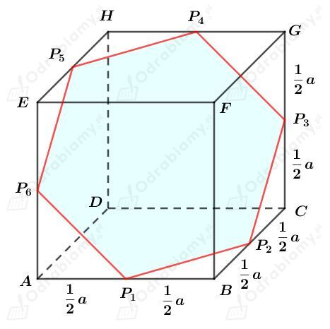
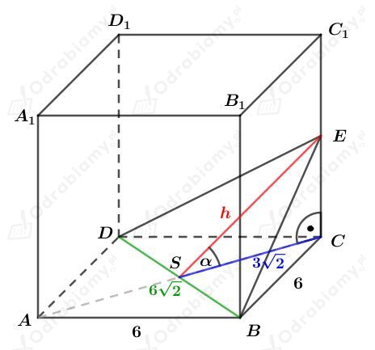
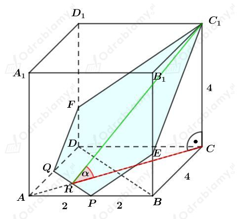
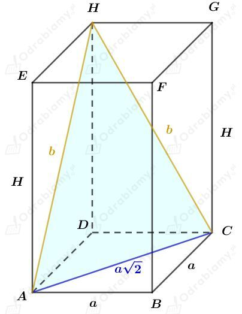
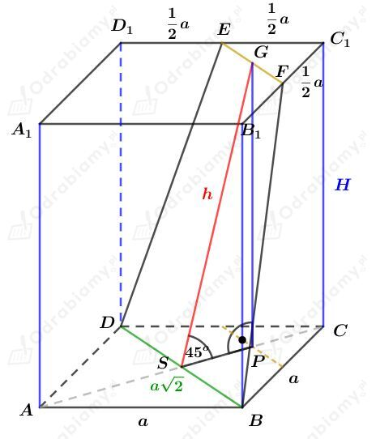
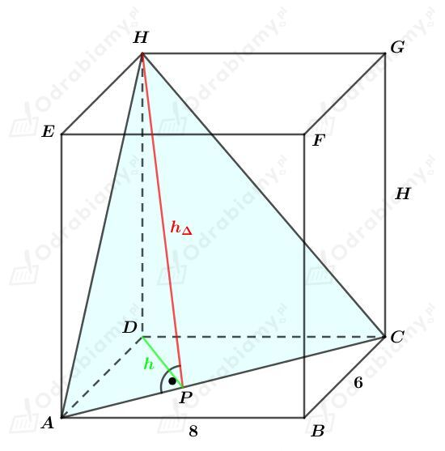

Rysunek:

Zauważmy, że boki sześciokąta P1P2P3P4P5P6 są przeciwprostokątnymi trójkątów prostokątnych o przyprostokątnych długości 1/2a. Zatem
Czyli sześciokąt P1P2P3P4P5P6 jest sześciokątem foremnym.
Wyznaczmy długość boku tego sześciokąta. Korzystając ze wzoru na długość przekątnej kwadratu mamy:
Sześciokąt foremny zbudowany jest z sześciu przystających trójkątów równobocznych.
Wyznaczmy pole tego sześciokąta. Korzystając ze wzoru na pole trójkąta równobocznego mamy:
Rysunek:

a)
Wiemy, że
zatem
Obliczmy pole otrzymanego przekroju. Mamy:
b)
Wiemy, że
Trójkąt SCE jest trójkątem równoramiennym prostokątnym, zatem:
oraz
Obliczmy pole otrzymanego przekroju. Mamy:
Rysunek:

Punkty P i Q są środkami - odpowiednio - krawędzi AB i AD.
Korzystając ze wzoru na przekątną kwadratu wiemy, że
Odcinek RC stanowi 3/4 długości tej przekątnej, czyli
Korzystając z twierdzenia Pitagorasa dla trójkąta RCC1 mamy:
Wyznaczmy cosinus kąta 𝛼. Mamy:
Niech h będzie długością wysokości trapezu QPEF. Korzystając z wyznaczonego cosinusa mamy:
Wyznaczmy pole trapezu QPEF. Mamy:
Wyznaczmy pole trójkąta FEC1. Mamy:
Wyznaczmy pole otrzymanego przekroju. Mamy:
Rysunek:

Podstawą tego graniastosłupa jest kwadrat o polu 32 cm2, zatem
Korzystając z twierdzenia cosinusów dla trójkąta ACH mamy:
Korzystając z twierdzenia Pitagorasa dla trójkąta ADH mamy:
Wyznaczmy objętość tego graniastosłupa. Mamy:
Rysunek:

Powstały przekrój DBFE jest trapezem równoramiennym.
Zauważmy, że
i
Zauważmy, że trójkąt SPG jest trójkątem prostokątnym równoramiennym, czyli
Zatem
Obliczmy objętość tego graniastosłupa. Mamy:
Obliczmy pole trapezu DBFE. Korzystając ze wzoru na pole trapezu mamy:
Rysunek:

Korzystając z twierdzenia Pitagorasa dla trójkąta ACD otrzymujemy:
Wiedząc, że pole trójkąta ACH jest równe 25 cm2, otrzymujemy:
Rozważmy trójkąt prostokątny ACD. Korzystając z podanego wzoru
| Długość wysokości h opuszczonej na przeciwprostokątną c w trójkącie prostokątnym opisuje wzór |
mamy:
Korzystając z twierdzenia Pitagorasa dla trójkąta DPH mamy:
Wyznaczmy objętość tego prostopadłościanu. Mamy:
Sześcian o krawędzi 6 cm przecięto płaszczyzną przechodzącą przez środki krawędzi wychodzących z wierzchołka C.
Zauważmy, że mniejsza otrzymana w wyniku cięcia bryła, jest ostrosłupem prawidłowym trójkątnym.
Długość krawędzi jej podstawy stanowi 1/2 długości przekątnej kwadratu o boku długości 6 cm, czyli
Długości krawędzi bocznych tego ostrosłupa stanowią 1/2 długości krawędzi sześcianu, czyli mają długość 3 cm.
Odcinek PC jest wysokością tego ostrosłupa.
Rysunek pomocniczy:
Odcinek x stanowi 2/3 długości wysokości trójkąta równobocznego EFG. Korzystając ze wzoru na długość wysokości trójkąta równobocznego mamy:
Korzystając z twierdzenia Pitagorasa dla trójkąta EPC mamy:
Więc otrzymaliśmy